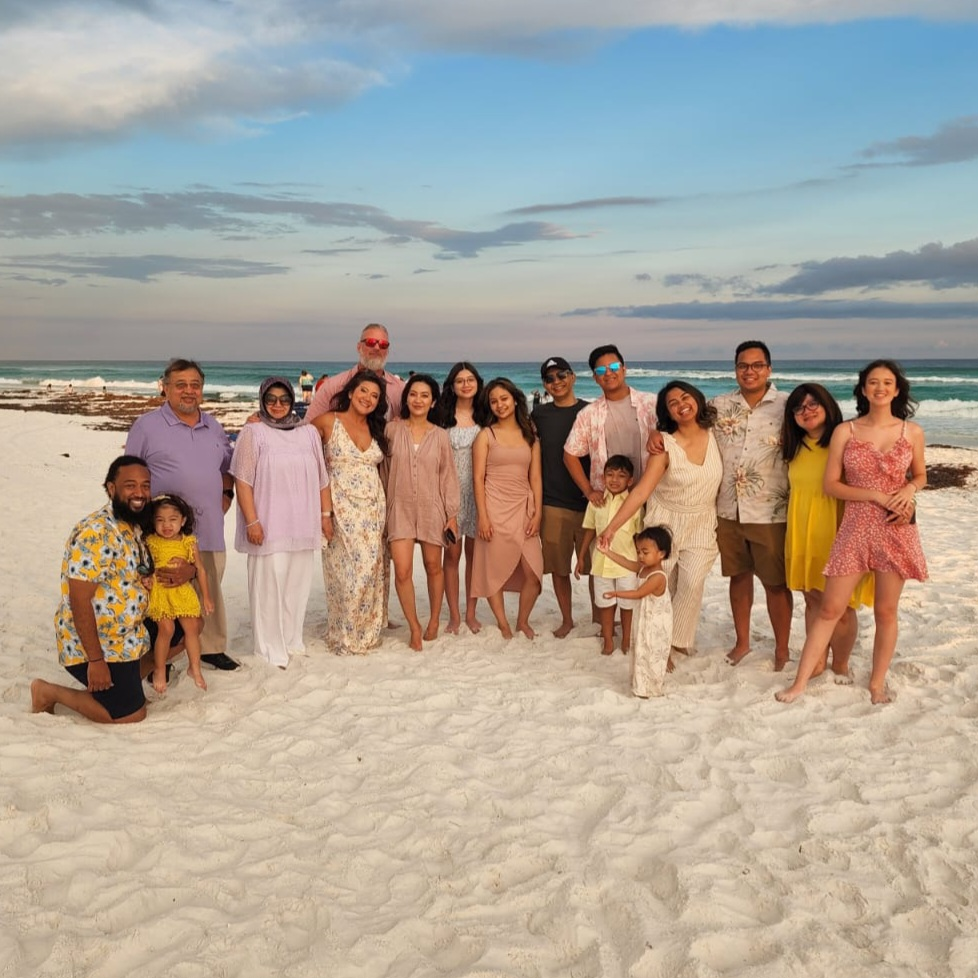

# About Me
______________________________________________________________________________________
Hi, my name is Johanna Kuhn and I am at Liberty Hill High School. I was born and raised in Texas. My favorite hobby is sewing and cooking. I took the class to explore my recent interest in engineering. I've always been a creative person and would like to find a career that will put that skill to use and create things that will improve people's lives.
<center> <width="50"></center>
______________________________________________________________________________________